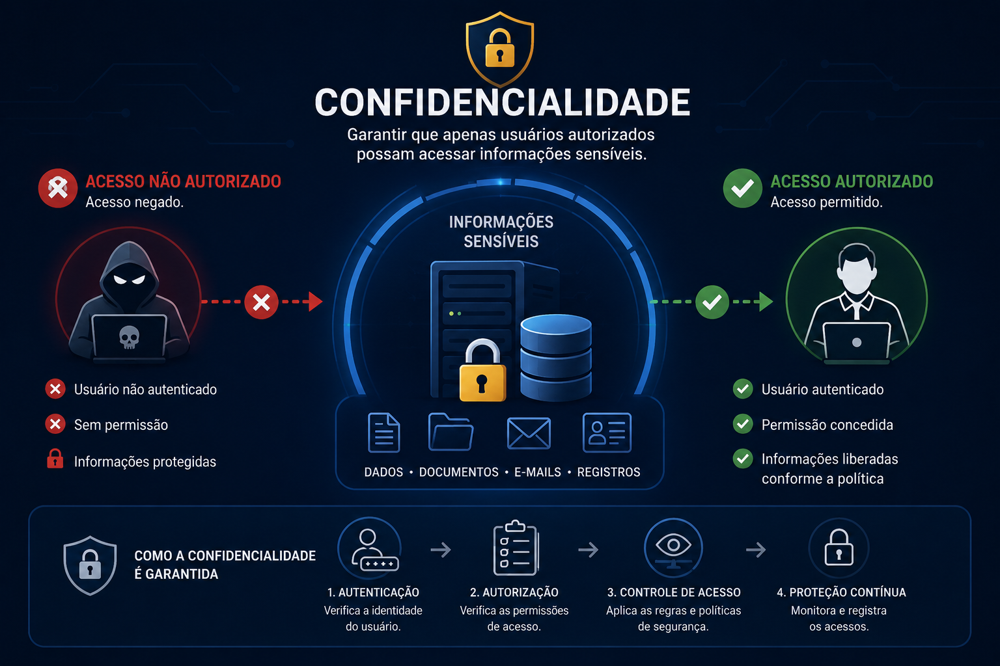
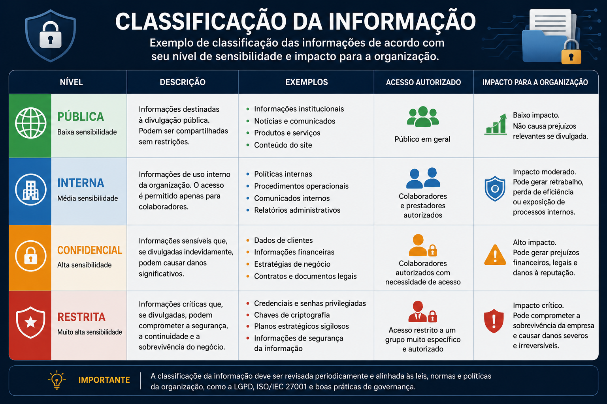
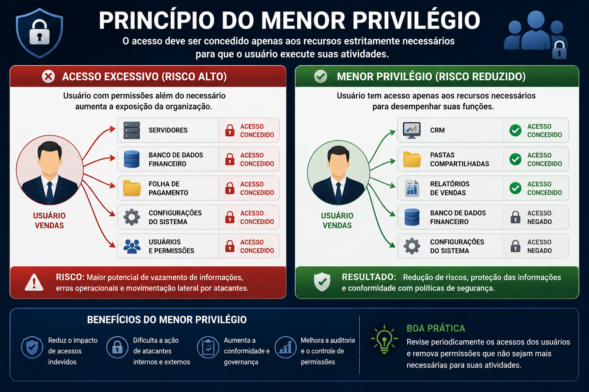
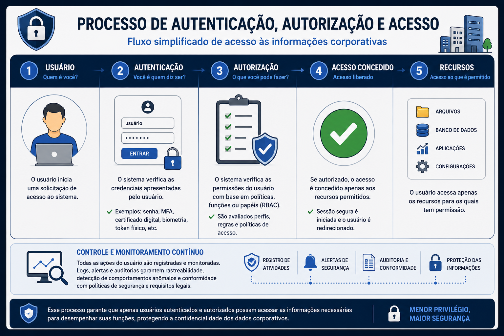
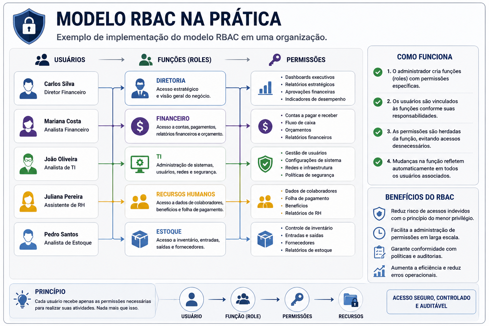
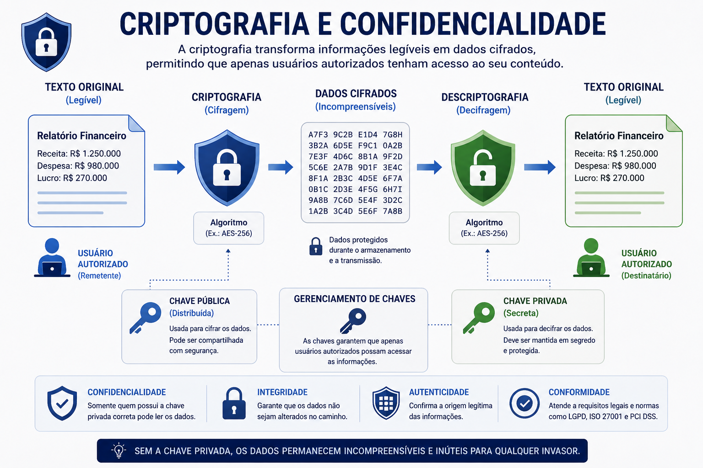
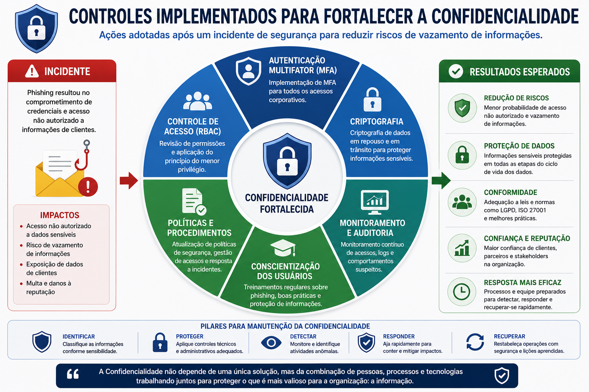
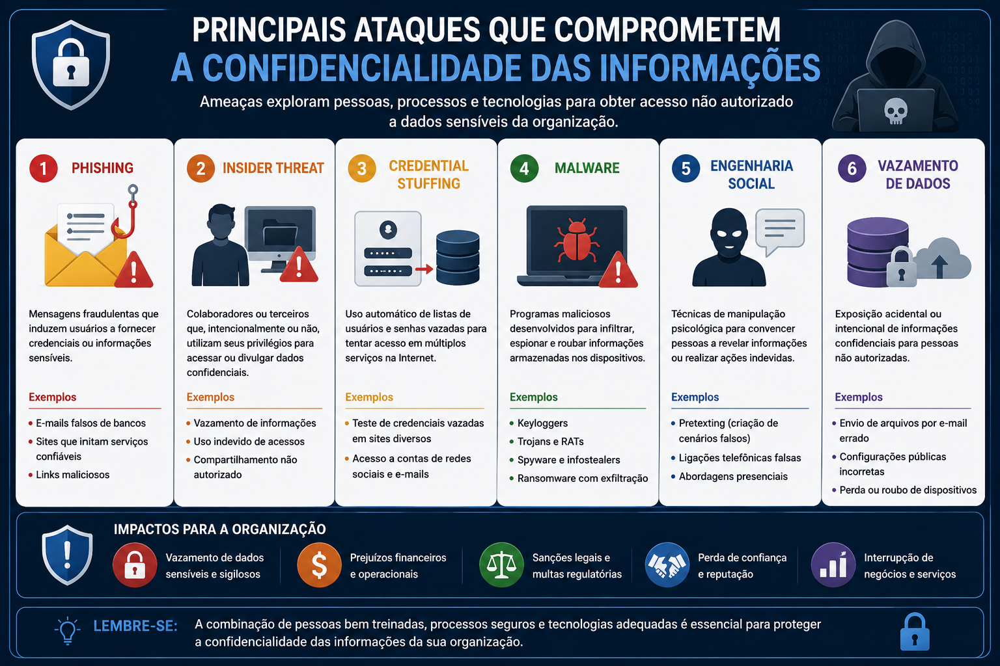
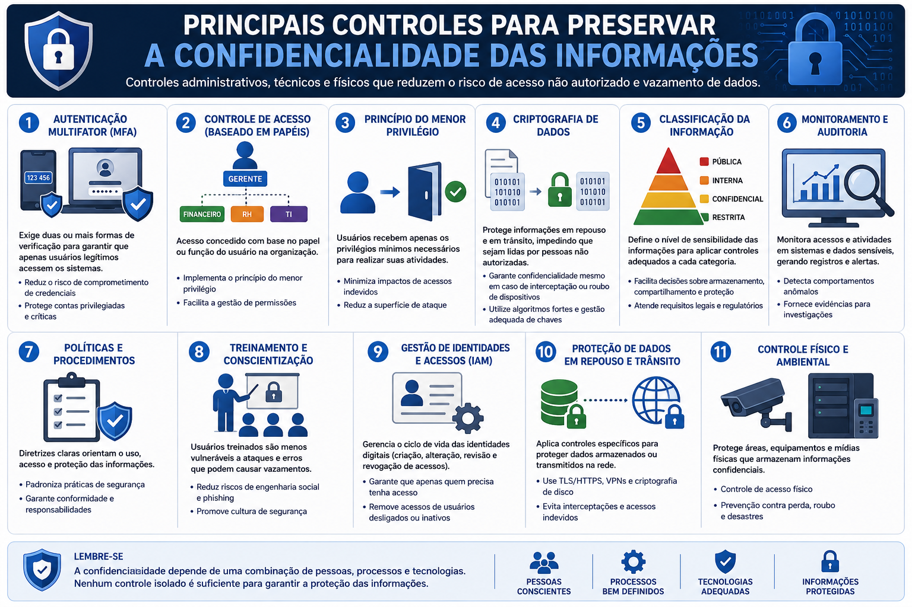

📋 Guia Rápido
📖 Resumo Executivo
Imagine uma instituição financeira responsável por armazenar milhões de informações confidenciais de seus clientes.
Esses dados incluem documentos pessoais, informações bancárias, senhas, histórico de transações, contratos eletrônicos e registros financeiros. Todos esses ativos representam um enorme valor para a organização e, consequentemente, tornam-se alvo constante de criminosos cibernéticos.
Agora imagine que um colaborador receba um e-mail aparentemente legítimo, solicitando a atualização de suas credenciais corporativas. Sem perceber, ele informa seu usuário e senha em uma página falsa criada por um invasor.
Minutos depois, essas credenciais são utilizadas para acessar sistemas internos contendo informações altamente sensíveis.
Nesse momento surge uma pergunta fundamental.
Como impedir que pessoas não autorizadas tenham acesso às informações da organização?
A resposta está na implementação de controles voltados à Confidencialidade. Esse princípio estabelece que apenas usuários devidamente autorizados devem visualizar, utilizar ou compartilhar informações consideradas sensíveis, reduzindo significativamente o risco de vazamentos, espionagem corporativa e fraudes.
Compreender o conceito de Confidencialidade, conhecer os principais mecanismos utilizados para proteger informações sensíveis e entender como esses controles são aplicados em ambientes corporativos para reduzir riscos de vazamentos de dados e acessos não autorizados.
🖼 Figura de Referência
A figura abaixo representa o princípio da Confidencialidade e sua função na proteção das informações dentro da Segurança da Informação.

🔒 O que é Confidencialidade?
A Confidencialidade é o princípio responsável por impedir que informações sejam acessadas, divulgadas ou utilizadas por indivíduos sem autorização. Seu objetivo é preservar o sigilo dos dados durante todo o seu ciclo de vida, desde sua criação até o descarte seguro.
Em um ambiente corporativo, praticamente todas as informações possuem algum nível de sensibilidade. Enquanto determinados documentos podem ser públicos, outros devem permanecer restritos a departamentos específicos ou até mesmo a um número reduzido de colaboradores.
Quando ocorre um acesso indevido a informações confidenciais, a organização pode sofrer prejuízos financeiros, perda de propriedade intelectual, danos à reputação, descumprimento de requisitos legais e comprometimento da confiança de clientes e parceiros.
Confidencialidade não significa esconder todas as informações. Significa garantir que cada informação seja acessada exclusivamente pelas pessoas que realmente necessitam dela para desempenhar suas atividades.
🏷 Classificação da Informação
Nem todas as informações possuem o mesmo grau de sensibilidade. Enquanto alguns dados podem ser divulgados livremente, outros precisam permanecer restritos a um grupo específico de colaboradores ou até mesmo a uma única pessoa. Por esse motivo, as organizações adotam políticas de classificação da informação, permitindo que controles de segurança sejam aplicados de forma proporcional ao valor e ao impacto que esses dados representam para o negócio.
A classificação das informações é uma das primeiras etapas de um programa de Segurança da Informação. Ela auxilia na definição dos controles de acesso, métodos de armazenamento, requisitos de criptografia, políticas de backup e formas adequadas de compartilhamento.

• 🌍 Pública — informações que podem ser divulgadas livremente.
• 🏢 Interna — destinadas apenas ao uso interno da organização.
• 🔒 Confidencial — acesso restrito a colaboradores autorizados.
• 🚨 Restrita — informações críticas cujo acesso deve ser altamente controlado.
👥 Quem deve ter acesso às informações?
Um erro bastante comum é acreditar que todos os colaboradores precisam ter acesso a todas as informações da empresa. Na prática, isso aumenta consideravelmente a superfície de ataque e facilita vazamentos acidentais ou maliciosos.
A Segurança da Informação recomenda que cada usuário possua apenas as permissões necessárias para executar suas atividades. Essa abordagem reduz o risco de exposição de dados e dificulta ações realizadas por invasores que comprometem uma conta de usuário.
Quanto menor o número de pessoas com acesso a uma informação, menor tende a ser o risco de comprometimento dessa informação.
Esse conceito é aplicado em praticamente todos os ambientes corporativos, incluindo servidores, bancos de dados, sistemas ERP, aplicações em nuvem e diretórios corporativos como Microsoft Active Directory.
🛡 Princípio do Menor Privilégio (Least Privilege)
O Princípio do Menor Privilégio (Least Privilege) determina que um usuário, processo ou sistema deve possuir apenas as permissões estritamente necessárias para realizar suas funções. Qualquer privilégio adicional representa um risco potencial para a organização.
Esse princípio reduz significativamente os impactos de ataques cibernéticos, pois limita as ações que podem ser executadas caso uma credencial seja comprometida.

Um colaborador do setor financeiro não precisa possuir permissões para alterar configurações do firewall corporativo. Da mesma forma, um administrador de rede não necessita acessar informações salariais do departamento de Recursos Humanos. Cada profissional deve visualizar apenas os recursos necessários para executar suas responsabilidades.
🎯 Need to Know
Complementando o Princípio do Menor Privilégio, muitas organizações adotam a política conhecida como Need to Know. Nesse modelo, o acesso não é concedido apenas porque um usuário possui determinada função, mas porque ele realmente necessita daquela informação para desempenhar uma atividade específica.
Essa abordagem é amplamente utilizada em ambientes governamentais, militares, instituições financeiras e empresas que manipulam propriedade intelectual ou informações estratégicas.
Least Privilege → concede apenas os privilégios mínimos.
Need to Know → concede acesso somente quando existe uma
necessidade legítima de utilização da informação.
🔐 Controle de Acesso
Controlar quem pode acessar uma informação é um dos mecanismos mais importantes para preservar a Confidencialidade. Mesmo que uma organização utilize criptografia, firewalls e sistemas de monitoramento, esses recursos serão insuficientes caso usuários recebam permissões além das necessárias para suas atividades.
O Controle de Acesso estabelece regras que determinam quais usuários podem visualizar, modificar ou compartilhar determinados recursos. Essas regras são implementadas por meio de políticas de segurança, autenticação, autorização e gerenciamento de privilégios.
Na prática, sempre que um usuário tenta acessar um sistema corporativo, diversas verificações são realizadas antes que o acesso seja concedido.

👤 Autenticação x Autorização
Embora frequentemente utilizados como sinônimos, autenticação e autorização representam processos completamente distintos dentro da Segurança da Informação.
Em outras palavras, um usuário pode ser autenticado com sucesso utilizando seu login e senha, mas ainda assim não possuir autorização para acessar determinadas informações.
Um colaborador do departamento financeiro realiza login normalmente no sistema ERP da empresa. Entretanto, ao tentar acessar informações do departamento de Recursos Humanos, recebe uma mensagem de acesso negado, pois seu perfil não possui autorização para visualizar esses dados.
🛡 Modelos de Controle de Acesso
Ao longo da evolução da Segurança da Informação surgiram diferentes modelos de controle de acesso. Cada um atende necessidades específicas e pode ser adotado isoladamente ou em conjunto com outros mecanismos.
O proprietário do recurso decide quem poderá acessá-lo.
As permissões são definidas pela organização e não podem ser alteradas pelos usuários.
As permissões são concedidas de acordo com o cargo ou função do usuário.
As decisões de acesso consideram atributos como localização, horário, departamento e nível de risco.
Atualmente, o modelo RBAC é um dos mais utilizados em ambientes corporativos, pois facilita a administração de permissões em organizações com grande número de colaboradores.
🏢 RBAC na prática
Imagine uma organização composta por centenas de colaboradores distribuídos entre diversos departamentos. Conceder permissões individualmente para cada usuário seria uma tarefa complexa e propensa a erros.
Nesse cenário, o RBAC simplifica a administração criando papéis (Roles). Cada papel reúne um conjunto de permissões previamente definido, e os usuários recebem acesso de acordo com sua função dentro da empresa.

• 👨💼 Diretor → acesso estratégico.
• 💰 Financeiro → contas e pagamentos.
• 👩💻 TI → administração dos sistemas.
• 📦 Estoque → inventário e logística.
• 👥 RH → dados de colaboradores.
🛡 Zero Trust
Durante muitos anos acreditou-se que bastava proteger o perímetro da rede para garantir a segurança da organização. Com a popularização da computação em nuvem, do trabalho remoto e dos dispositivos móveis, esse modelo tornou-se insuficiente.
O modelo Zero Trust parte do princípio de que nenhum usuário, dispositivo ou aplicação deve ser considerado confiável automaticamente, mesmo que esteja dentro da rede corporativa.
"Never Trust. Always Verify."
Cada tentativa de acesso deve ser validada continuamente, considerando a identidade do usuário, o dispositivo utilizado, sua localização, o horário de acesso e diversos outros fatores de risco.
Zero Trust é um dos modelos de segurança mais importantes da atualidade e será abordado em detalhes em uma série específica sobre Arquiteturas Modernas de Segurança.
🔐 Criptografia e a Confidencialidade
Entre todos os mecanismos utilizados para preservar a Confidencialidade, a criptografia ocupa uma posição de destaque. Seu principal objetivo é transformar informações legíveis em dados cifrados, tornando-os incompreensíveis para qualquer pessoa que não possua a chave correta para realizar sua leitura.
Mesmo que um atacante consiga interceptar ou copiar um arquivo protegido, a criptografia dificulta significativamente sua utilização, pois o conteúdo permanece inacessível sem o processo adequado de descriptografia.
Por esse motivo, a criptografia é considerada um dos pilares da proteção de informações sensíveis em ambientes corporativos, aplicações em nuvem, dispositivos móveis e comunicações realizadas pela Internet.

💾 Dados em Repouso e Dados em Trânsito
A criptografia pode ser aplicada em diferentes momentos do ciclo de vida da informação. Os dois cenários mais comuns são conhecidos como dados em repouso e dados em trânsito.
Informações armazenadas em discos rígidos, SSDs, bancos de dados, servidores de arquivos, pendrives e serviços de armazenamento em nuvem.
Informações transmitidas entre computadores, servidores, aplicações e dispositivos através de redes locais ou da Internet.
Cada cenário apresenta riscos específicos e exige mecanismos de proteção adequados. Enquanto dados armazenados podem ser protegidos por criptografia de disco ou banco de dados, informações em trânsito normalmente utilizam protocolos seguros de comunicação.
🛠 Tecnologias Utilizadas para Proteger a Confidencialidade
Diversas tecnologias trabalham em conjunto para proteger informações contra acessos não autorizados. Algumas atuam protegendo arquivos, outras garantem comunicações seguras e algumas controlam o acesso aos recursos corporativos.
Protege comunicações entre navegadores e servidores Web utilizando criptografia.
Cria túneis criptografados para acesso remoto a redes corporativas.
Criptografa discos no Microsoft Windows, protegendo informações armazenadas.
Criptografia de discos amplamente utilizada em sistemas Linux.
Permite criptografar arquivos, documentos e mensagens utilizando criptografia assimétrica.
Protegem mensagens de correio eletrônico por meio de assinatura digital e criptografia.
📲 Autenticação Multifator (MFA)
Durante muitos anos, usuários dependeram exclusivamente de senhas para proteger suas contas. Entretanto, ataques como phishing, vazamento de credenciais e reutilização de senhas demonstraram que esse mecanismo, isoladamente, não é suficiente.
A Autenticação Multifator (MFA) adiciona uma camada extra de proteção, exigindo que o usuário apresente dois ou mais fatores de autenticação antes que o acesso seja concedido.
Mesmo que um invasor descubra a senha de um colaborador, ainda será necessário apresentar um segundo fator de autenticação para concluir o processo de acesso.
Sempre que disponível, habilite a autenticação multifator para contas corporativas, serviços em nuvem, VPNs e aplicações críticas da organização. Esse simples mecanismo reduz significativamente o risco de comprometimento de credenciais.
🏢 Estudo de Caso
Uma empresa do setor financeiro adotava autenticação baseada apenas em usuário e senha para acesso ao ambiente corporativo. Após uma campanha de phishing, diversos colaboradores tiveram suas credenciais comprometidas, permitindo que atacantes acessassem sistemas internos contendo informações de clientes.
Após o incidente, a organização implementou autenticação multifator, revisou suas políticas de acesso, adotou o princípio do menor privilégio e iniciou campanhas periódicas de conscientização dos colaboradores.

Embora nenhuma tecnologia elimine completamente os riscos, a combinação de diferentes controles reduziu significativamente a probabilidade de novos comprometimentos.
🎣 Principais Ameaças à Confidencialidade
As organizações investem continuamente em tecnologias para proteger suas informações, porém grande parte dos incidentes de segurança ainda ocorre devido à exploração do fator humano ou ao uso inadequado de credenciais. Conhecer essas ameaças é fundamental para compreender a importância da Confidencialidade e adotar medidas preventivas.

Mensagens fraudulentas utilizadas para induzir usuários a fornecer credenciais, informações financeiras ou instalar softwares maliciosos.
Colaboradores ou terceiros que utilizam seus privilégios para acessar ou divulgar informações sem autorização.
Ataque baseado na reutilização de credenciais vazadas em outros serviços.
Programas maliciosos capazes de capturar senhas, documentos e informações confidenciais armazenadas nos dispositivos.
Manipulação psicológica utilizada para convencer pessoas a revelar informações sensíveis.
Compartilhamento acidental ou intencional de informações protegidas para pessoas não autorizadas.
🛡 Controles que Protegem a Confidencialidade
A proteção da Confidencialidade depende da combinação de diversos controles administrativos, físicos e tecnológicos. Nenhuma solução isolada é capaz de eliminar completamente os riscos de vazamento de informações.

Entre os mecanismos mais utilizados destacam-se a autenticação multifator, criptografia, classificação da informação, controle de acesso baseado em papéis (RBAC), políticas de menor privilégio, monitoramento contínuo, treinamento dos usuários e gestão adequada de identidades.
📚 O que aprendemos?
- O conceito de Confidencialidade.
- A importância da classificação da informação.
- O Princípio do Menor Privilégio.
- O conceito de Need to Know.
- Os modelos DAC, MAC, RBAC e ABAC.
- A diferença entre autenticação e autorização.
- A importância da criptografia para proteção dos dados.
- Os conceitos de dados em repouso e dados em trânsito.
- Como a autenticação multifator fortalece a segurança.
- As principais ameaças à Confidencialidade.
- Os controles utilizados para reduzir riscos de vazamento de informações.
🚀 Próximo Capítulo
Até este momento estudamos como impedir que informações sejam acessadas por pessoas não autorizadas. Entretanto, proteger o sigilo dos dados é apenas uma parte da Segurança da Informação.
No próximo capítulo conheceremos o segundo pilar da Tríade CIA: Integridade.
Entenderemos como garantir que informações permaneçam corretas, completas e confiáveis, mesmo diante de falhas, erros operacionais ou ataques cibernéticos.
➡ Ler o próximo capítulo
✅ 🔺 Tríade CIA
✅ 🔒 Confidencialidade
➡ 🛡 Integridade
⬜ ⚡ Disponibilidade
⬜ 🔐 Criptografia
⬜ 👥 Controle de Acesso
⬜ 📊 Classificação da Informação